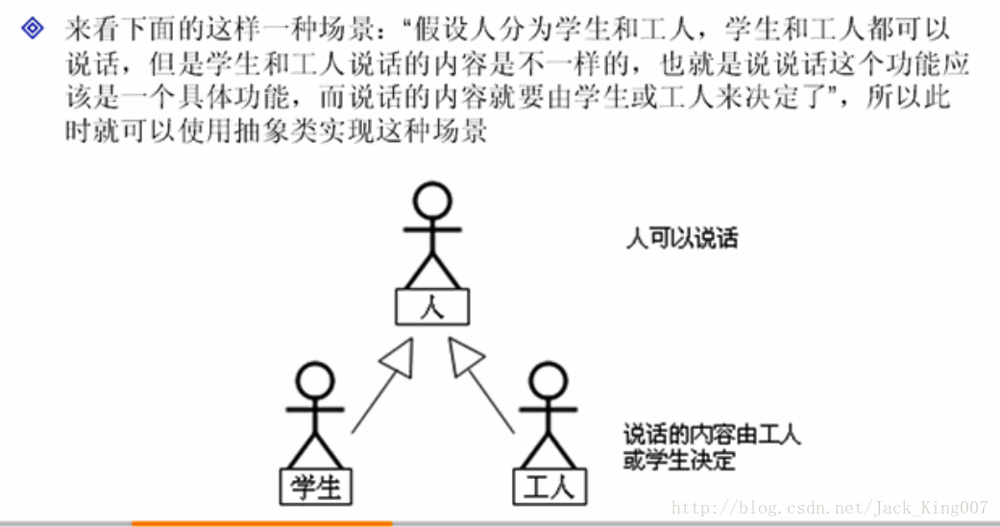
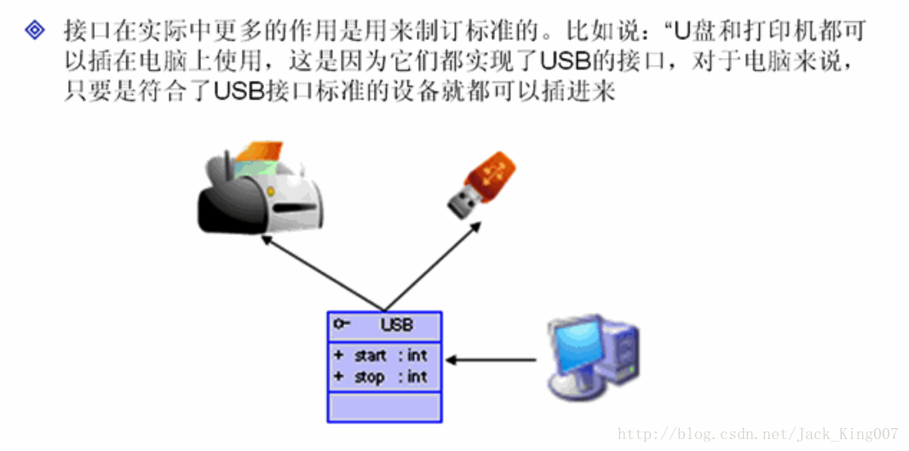
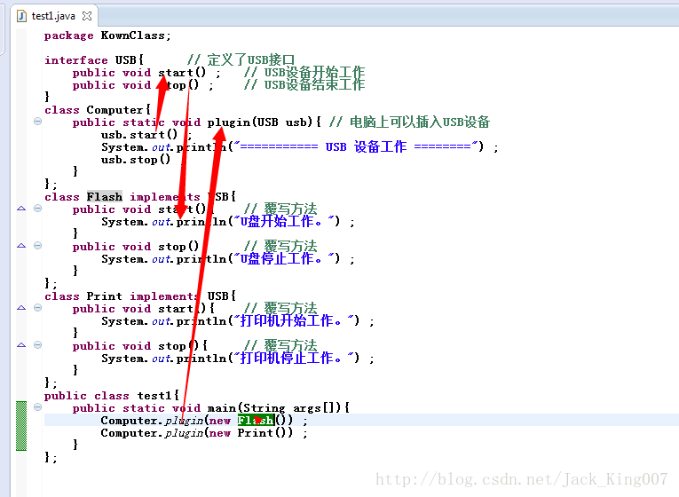
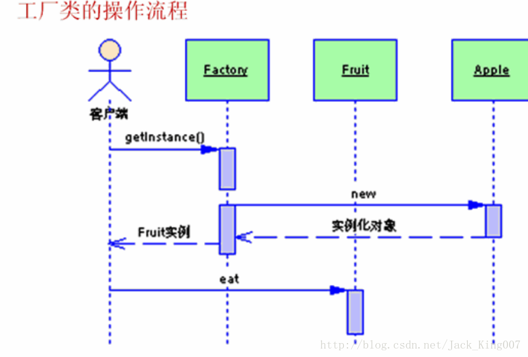

java基础之抽象类与接口的应用（一）
（1）掌握抽象类及接口的实例化操作
在java中可以通过对象的多态性，为抽象类和接口实例化，这样再使用抽象类和接口的时候就可以调用本之类中说覆写过的方法
1.通过对象多态性可以发现，子类发生了向上转型关系之后，所调用全部方法都被覆写过了
abstract class A{ // 定义抽象类A
public abstract void print() ; // 定义抽象方法print()
};
class B extends A { // 定义子类，继承抽象类
public void print(){ // 覆写抽象方法
System.out.println("Hello World!!!") ;
}
};
public class AbstractCaseDemo01{
public static void main(String args[]){
A a = new B() ; // 通过子类为抽象类实例化
a.print() ;
}
};可以用这个概念为一个接口实例化...........
2.模版设计的作用

package KownClass;
abstract class Person{
private String name ; // 定义name属性
private int age ; // 定义age属性
public Person(String name,int age){
this.name = name ;
this.age = age ;
}
public String getName(){
return this.name ;
}
public int getAge(){
return this.age ;
}
public void say(){ // 人说话是一个具体的功能
System.out.println(this.getContent()) ; // 输出内容
}
public abstract String getContent() ; // 说话的内容由子类决定
};
class Student extends Person{
private float score ;
public Student(String name, int age, float score) {
super(name, age);
this.score = score;
}
public String getContent(){
return "学生信息 --> 姓名：" + super.getName() +
"；年龄：" + super.getAge() +
"；成绩：" + this.score ;
}
};
class Worker extends Person{
private float salary ;
public Worker(String name,int age,float salary){
super(name,age) ; // 调用父类中的构造方法
this.salary = salary ;
}
public String getContent(){
return "工人信息 --> 姓名：" + super.getName() +
"；年龄：" + super.getAge() +
"；工资：" + this.salary ;
}
};
public class test1{
public static void main(String args[]){
Person per1 = null ; // 声明Person对象
Person per2 = null ; // 声明Person对象
per1 = new Student("张三",20,99.0f) ; // 学生是一个人
per2 = new Worker("李四",30,3000.0f) ; // 工人是一个人
per1.say() ; // 学生说学生的话
per2.say() ; // 工人说工人的话
}
};3.接口实际作用-指定标准


3.工厂设计模式的作用
工厂模式是在java中最常用的设计模式
关于
getinstance
getinstance这个方法在单例模式用的甚多，为了避免对内存造成浪费，直到需要实例化该类的时候才将其实例化，所以用getInstance来获取该对象，至于其他时候，也就是为了简便而已，为了不让程序在实例化对象的时候，不用每次都用new关键字，索性提供一个instance方法
interface Fruit{ // 定义一个水果接口
public void eat() ; // 吃水果
}
class Apple implements Fruit{
public void eat(){
System.out.println("** 吃苹果。") ;
}
};
class Orange implements Fruit{
public void eat(){
System.out.println("** 吃橘子。") ;
}
};
class Factory{ // 定义工厂类
public static Fruit getInstance(String className){
Fruit f = null ;
if("apple".equals(className)){ // 判断是否要的是苹果的子类
f = new Apple() ;
}
if("orange".equals(className)){ // 判断是否要的是橘子的子类
f = new Orange() ;
}
return f ;
}
};
public class InterfaceCaseDemo05{
public static void main(String args[]){
Fruit f = Factory.getInstance(args[0]) ; // 实例化接口
if(f!=null){ // 判断是否取得实例
f.eat() ;
}
}
};